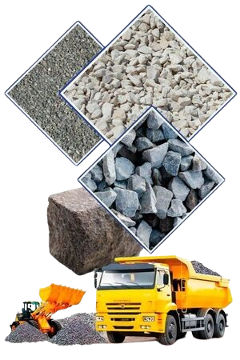

TEXAN Concrete Ready Mix is an established Houston concrete supply and cement mixing company. We have a proven record of success in formulating and delivering the right solutions for residential, commercial and infrastructure applications in our area. Additionally, we maintain a fleet of concrete mixer trucks to serve our customers better. By choosing us for all your Houston concrete products, you can enjoy prompt delivery and the best selection of concrete formulations in the industry.
Our team of concrete technicians can create customized solutions for your specific set of needs. For instance, we use only ASTM-approved aggregate materials that include some or all of the following:
These aggregate materials are combined with SEMA-approved add mixes and combined with water to precise specifications. Moreover, TEXAN Concrete Ready Mix uses the Alkon Spectrum 6 system to ensure the exact proportions of each element in your concrete formulation. Our Houston cement mixing team can provide you with the expert assistance you need to choose the right product for you.

These are just a few of the mixes we can provide. Give us a call for more specific mix types for your next project.
As a trusted Houston concrete contractor, TEXAN Concrete Ready Mix can custom-design and formulate concrete to your specifications. Our proven methodology takes into consideration a number of key factors:
Our experience and expertise in the concrete formulation field can produce the most effective solutions for your building project. By working with you at every phase of your project and determining your priorities and goals, the TEXAN Concrete Ready Mix team can design the right formulations to suit your needs perfectly.
We use the latest in concrete formulating and mixing technologies. Therefore, we can provide you with the best and most affordable solutions for residential, commercial and public projects. Additionally, our on-site delivery and professional pouring services are designed to make your job easier. Likewise, we ensure the highest possible quality for your finished project. Moreover, we can take on challenges both large and small. Our professionals apply the same careful attention to detail to all our projects. Our team has the experience and the know-how you need to enjoy the best results from your concrete installation. For instance, small projects like residential driveways to larger projects such as multi-story parking structures and buildings, you can rest assure our team will provide the right assistance from start to finish.
At TEXAN Concrete Ready Mix, we offer full-service concrete formulation, mixing and delivery to your worksite or home. In addition, our team of concrete experts will work with you to determine the best solution for your needs. We will also provide you with the most cost-effective solutions in the Houston area. To learn more about the array of products and services provided by TEXAN Concrete Ready Mix, please contact us by calling us today at 713-255-3333. We look forward to serving all your Houston concrete supply needs.